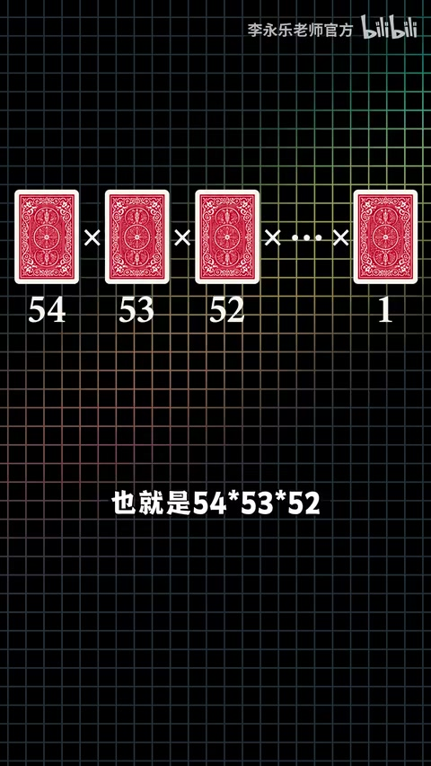
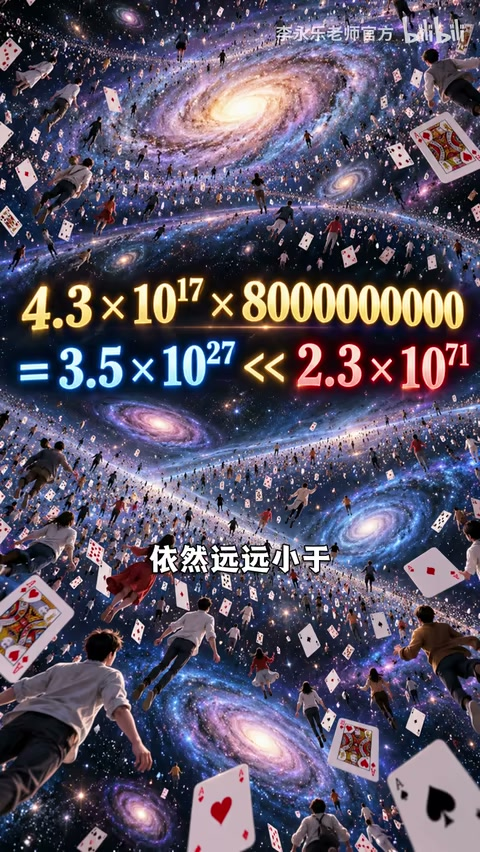

扑克：54 的阶乘
第一张 54 选、第二张 53……乘到 1，约 2.3×10^71。宇宙约 138 亿年≈4.3×10^17 秒；就算 80 亿人每秒洗一次，总次数约 3.5×10^27，仍远小于排列数。
[00:08] 宣称：充分洗牌后，每局扑克/麻将都是史上独一份
Claim: a fair shuffle makes each deal historically unique.

[00:25] 扑克含大小王 54 张：排列数=54×53×…×1≈2.3×10^71
54! with jokers ≈ 2.3×10^71 deal orders.

[00:45] 宇宙年龄换秒、全球每秒洗牌，次数仍远小于 54!
Cosmic seconds × humanity still << 54!.
麻将：重复排列更大
34 种×4 张=136 张，总数 136!/(4!)^34≈4.3×10^162，比扑克多约 91 个零。全宇宙原子当人每秒洗到现在，量级仍约 10^97，远不够。
[01:05] 麻将：136! / (4!)^34 ≈ 4.3×10^162
Mahjong deals ≈ 4.3×10^162 after identical-tile correction.
[01:25] 原子数×宇宙秒数仍远小于麻将排列——重复牌局概率极低
Atoms × cosmic seconds still << mahjong permutations.
建模思维，不只炫大数
重点不是吓人数值，而是从生活问题抽出通用方法：阶乘与去重。作者以此定义数学思维，并导向小学/初中趣味题内容。
[01:50] 数学思维：透过牌局表象，抽出排列建模的通用方法
Math mindset: from a game scene, extract a general counting model.
[02:15] 用数学理解生活，牌局瞬间「高大上」——兴趣入口
Model life with math—poker/mahjong become curiosity hooks.
[02:40] 收束到小学数学课与直播预约——大数是引子，方法是目标
Closes on kids’ math content—big numbers bait, methods teach.
小结
独一无二感来自组合爆炸；学会建模比背数字重要。